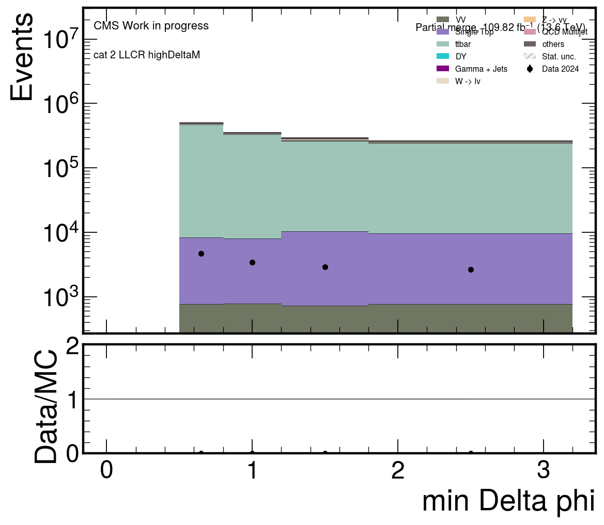
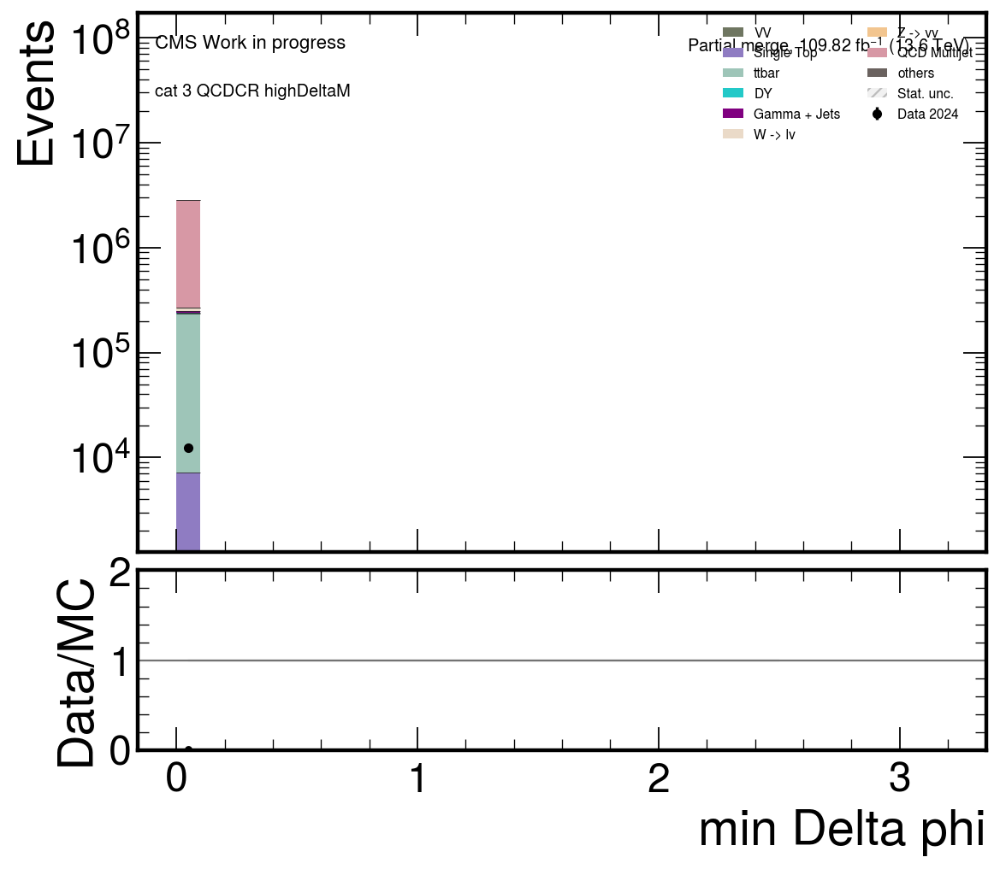
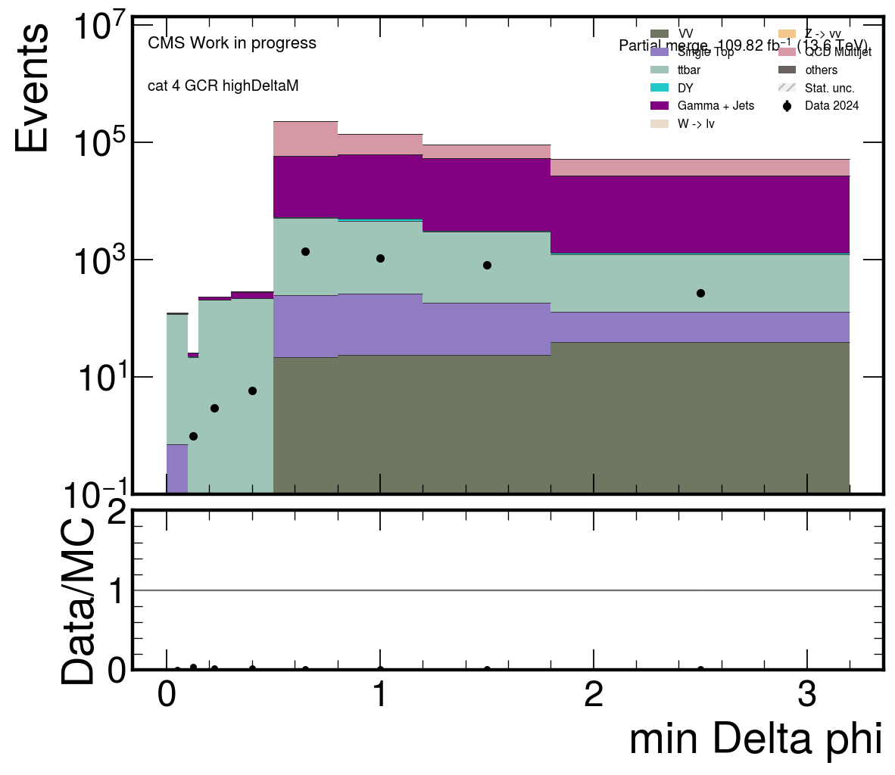
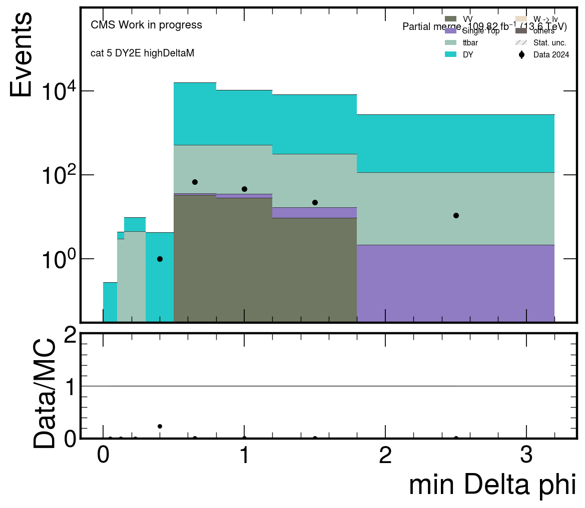
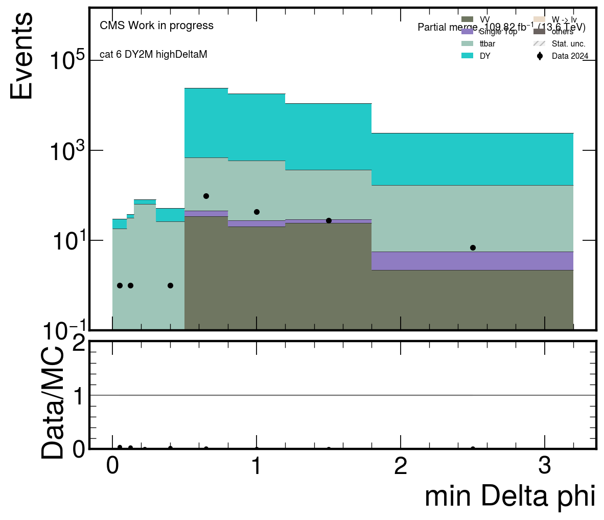
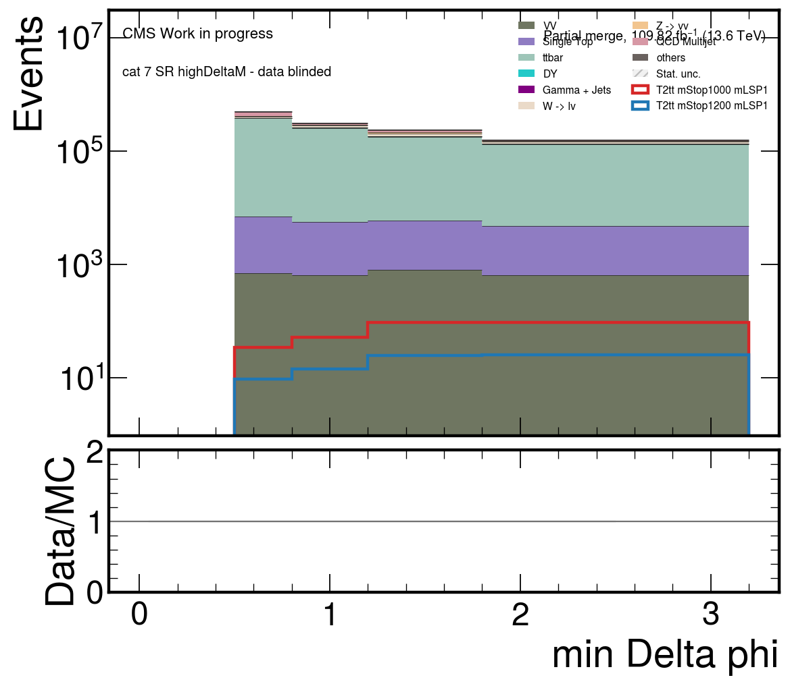

partial_recoil_pt_cat2_LLCR_highDeltaM
partial_recoil_pt_cat2_LLCR_highDeltaM partial_metpt_cat2_LLCR_highDeltaM
partial_metpt_cat2_LLCR_highDeltaM partial_ht_cat2_LLCR_highDeltaM
partial_ht_cat2_LLCR_highDeltaM partial_njet_cat2_LLCR_highDeltaM
partial_njet_cat2_LLCR_highDeltaM partial_nb_cat2_LLCR_highDeltaM
partial_nb_cat2_LLCR_highDeltaM partial_nfj_cat2_LLCR_highDeltaM
partial_nfj_cat2_LLCR_highDeltaM{kind=link}

partial_min_dphi_cat2_LLCR_highDeltaM partial_recoil_pt_cat3_QCDCR_highDeltaM
partial_recoil_pt_cat3_QCDCR_highDeltaM partial_metpt_cat3_QCDCR_highDeltaM
partial_metpt_cat3_QCDCR_highDeltaM partial_ht_cat3_QCDCR_highDeltaM
partial_ht_cat3_QCDCR_highDeltaM partial_njet_cat3_QCDCR_highDeltaM
partial_njet_cat3_QCDCR_highDeltaM partial_nb_cat3_QCDCR_highDeltaM
partial_nb_cat3_QCDCR_highDeltaM partial_nfj_cat3_QCDCR_highDeltaM
partial_nfj_cat3_QCDCR_highDeltaM{kind=link}

partial_min_dphi_cat3_QCDCR_highDeltaM partial_recoil_pt_cat4_GCR_highDeltaM
partial_recoil_pt_cat4_GCR_highDeltaM partial_metpt_cat4_GCR_highDeltaM
partial_metpt_cat4_GCR_highDeltaM partial_ht_cat4_GCR_highDeltaM
partial_ht_cat4_GCR_highDeltaM partial_njet_cat4_GCR_highDeltaM
partial_njet_cat4_GCR_highDeltaM partial_nb_cat4_GCR_highDeltaM
partial_nb_cat4_GCR_highDeltaM partial_nfj_cat4_GCR_highDeltaM
partial_nfj_cat4_GCR_highDeltaM{kind=link}

partial_min_dphi_cat4_GCR_highDeltaM partial_recoil_pt_cat5_DY2E_highDeltaM
partial_recoil_pt_cat5_DY2E_highDeltaM partial_metpt_cat5_DY2E_highDeltaM
partial_metpt_cat5_DY2E_highDeltaM partial_ht_cat5_DY2E_highDeltaM
partial_ht_cat5_DY2E_highDeltaM partial_njet_cat5_DY2E_highDeltaM
partial_njet_cat5_DY2E_highDeltaM partial_nb_cat5_DY2E_highDeltaM
partial_nb_cat5_DY2E_highDeltaM partial_nfj_cat5_DY2E_highDeltaM
partial_nfj_cat5_DY2E_highDeltaM{kind=link}

partial_min_dphi_cat5_DY2E_highDeltaM partial_recoil_pt_cat6_DY2M_highDeltaM
partial_recoil_pt_cat6_DY2M_highDeltaM partial_metpt_cat6_DY2M_highDeltaM
partial_metpt_cat6_DY2M_highDeltaM partial_ht_cat6_DY2M_highDeltaM
partial_ht_cat6_DY2M_highDeltaM partial_njet_cat6_DY2M_highDeltaM
partial_njet_cat6_DY2M_highDeltaM partial_nb_cat6_DY2M_highDeltaM
partial_nb_cat6_DY2M_highDeltaM partial_nfj_cat6_DY2M_highDeltaM
partial_nfj_cat6_DY2M_highDeltaM{kind=link}

partial_min_dphi_cat6_DY2M_highDeltaM partial_recoil_pt_cat7_SR_highDeltaM
partial_recoil_pt_cat7_SR_highDeltaM partial_metpt_cat7_SR_highDeltaM
partial_metpt_cat7_SR_highDeltaM partial_ht_cat7_SR_highDeltaM
partial_ht_cat7_SR_highDeltaM partial_njet_cat7_SR_highDeltaM
partial_njet_cat7_SR_highDeltaM partial_nb_cat7_SR_highDeltaM
partial_nb_cat7_SR_highDeltaM partial_nfj_cat7_SR_highDeltaM
partial_nfj_cat7_SR_highDeltaM{kind=link}

partial_min_dphi_cat7_SR_highDeltaM partial_cr_sr_region_bins
partial_cr_sr_region_bins